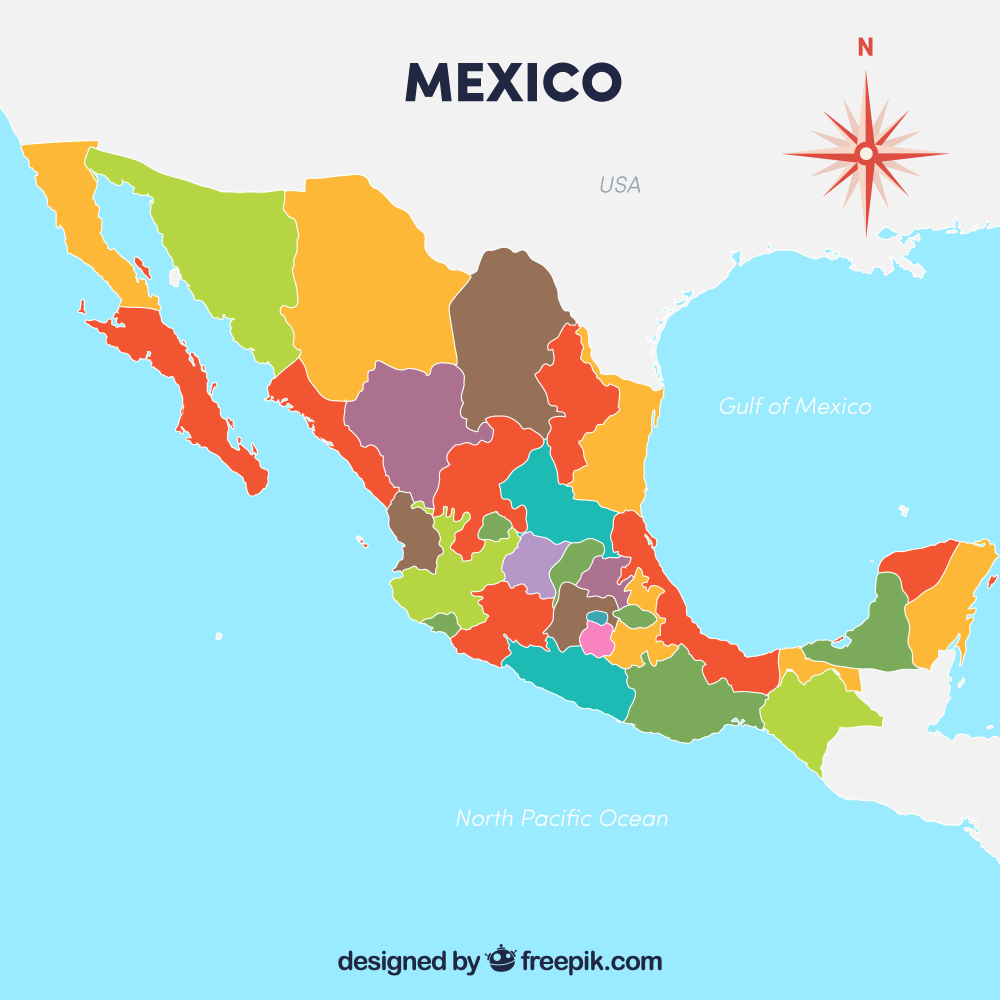

Insects have been a staple in Mexican cuisine for centuries. Long before the Spaniards arrived, they were a main source of protein in Mexico, known for being high in fiber, low in fat, and inexpensive. Many people believe insects are delicious and offer unique flavors and textures.
Here are some ways insects are used in Mexican cuisine:
•Tacos and Quesadillas: Chapulines (grasshoppers) can be added to tacos and quesadillas. They’re often boiled, fried, and
seasoned with chili, lime, and garlic.
•Guacamole: Chapulines can be mixed into guacamole for an extra crunch.
•Bar Snacks: Chapulines make for a tasty bar snack.
•Spice Mixes, Salsas, and Mole Sauces: Chapulines, chicatanas (giant winged ants), and maguey worms are used in many spice mixes,
salsas, and mole sauces.
•Food Colorant: Cochineal, a type of insect, is used as a natural food colorant.
•Street Food and Fine Dining: Chapulines can be found in both street food stands and high-end restaurants.
•Other Foods: Insects can also be found in dishes like omelets, tamales, chocolate truffles, and sorbets.
By region:
•Puebla: Escamoles (ant larvae) are eaten between March and May and have a delicate texture with a buttery, nutty flavor.
•Zapotitlán: Cuchamás (green caterpillars) are sold in markets and are a crispy snack, often fried with lime, chili, and onion, or used in tacos.
•Oaxaca: Chicatanas (giant winged ants) are a rare treat found mainly in Oaxaca. They can be pan-roasted with lime or mixed into salsas with chili,
garlic, and salt. They are featured in many dishes.
Insects add a unique twist to Mexican cuisine and show just how diverse and interesting traditional foods can be!